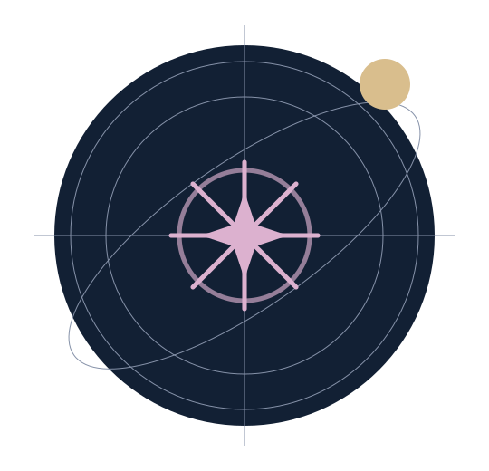

[Categoria do produto]
[Uma chamada sobre autoconhecimento.]
[Apresentação breve do produto e da proposta de valor. Substituir por texto validado antes da publicação.]
[Explorar minha amostra]◇ [Informação verificável]✧ [Condição de entrega]✓ [Condição de acesso]


[O que você recebe]
[Uma apresentação clara do relatório]
[Descrição do material entregue e do que o leitor encontrará.]
- [Conteúdo confirmado do produto]
- [Conteúdo confirmado do produto]
- [Conteúdo confirmado do produto]
[Como funciona]
[Três etapas para começar]
01 · [Etapa]
[Explicação breve da etapa, alinhada ao fluxo real.]
02 · [Etapa]
[Explicação breve da etapa, alinhada ao fluxo real.]
03 · [Etapa]
[Explicação breve da etapa, alinhada ao fluxo real.]
[Perguntas frequentes]
[Pergunta frequente]
[Resposta revisada sobre o produto, sem promessas ou condições presumidas.]
[Pergunta frequente]
[Resposta revisada sobre o produto, sem promessas ou condições presumidas.]
[Pergunta frequente]
[Resposta revisada sobre o produto, sem promessas ou condições presumidas.]